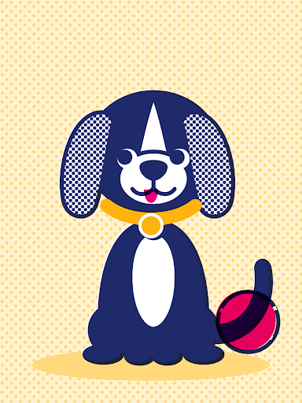
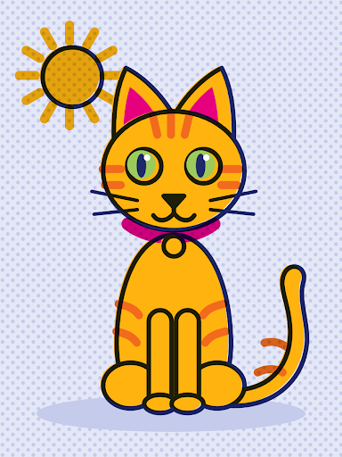
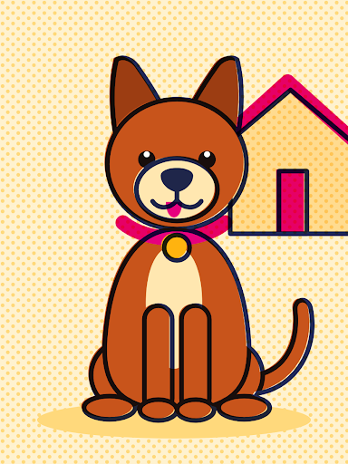
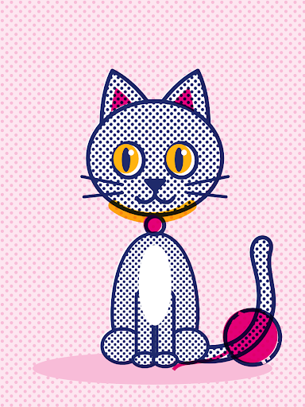
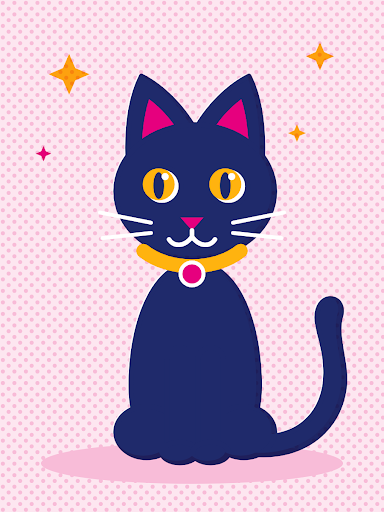

LA TABLA
En vivo42 peludos buscan casa en Tulancingo
search
1
stars
92% match

LUNA
Hembra · 2a · Mediana
home_work Refugio San Roque
2
stars
88% match

NUBE
Gatita · 1a · Chica
home La Joya Temporal
3
stars
95% match

MAX
Cachorro · 4m · Juguetón
pets Huellitas Tulancingo
4
stars
84% match

TIGRE
Macho · 3a · Tranquilo
favorite Ángeles de 4 Patas
5
stars
90% match

CANELA
Guardiana · 5a · Leal
home_work Refugio Esperanza
6
stars
96% match

PELUSA
Gatita · 3m · Curiosa
home_work Refugio San Roque
7
timer
214 días esperando

ROCKY
Abuelito · 8a · Noble
local_hospital San Roque Huellitas
8
stars
89% match

SIMÓN
Gato negro · 2a · Tímido
favorite Ángeles de 4 Patas
9
stars
94% match

KIRA
Cachorra · 5m · Lista
pets Huellitas Tulancingo
Tradición de Tulancingo
¿No sabes a quién elegir?
Deja que la baraja cante tu compañero ideal.